Total Commander
CD/DVD Burning Plugin
Version 0.9.3 - Documentation
Written by Frank Zavelberg. Copyright © 2005 by Tiamat Software. All rights reserved.
PLEASE READ THIS TEXT CAREFULLY TO UNDERSTAND HOW THE TC BURNING PLUGIN WORKS, THUS AVOIDING UNNECESSARY QUESTIONS AND PROBLEMS !
You are allowed to use this software only if you accept the terms of the following license agreement.
The aim of the Total Commander CD/DVD Burning Plugin, or TCBurner, is to make burning CDs and DVDs as easy and comfortable as possible for Total Commander users.
TCBurner uses the FoxBurner SDK. For further information, click here.
Many thanks to Poul Dam (pouldam@gmail.com) for his icon work assistance!
This plugin is Freeware and will function for an unlimited time, without feature restrictions. However, if you like it and want to show your appreciation to the developer, a donation will be very welcome!
You can donate the following ways:
Press ALT-F1 or ALT-F2 and switch to Network Neighborhood. You find the plugin under CD/DVD Burner there, with a golden CD as icon.
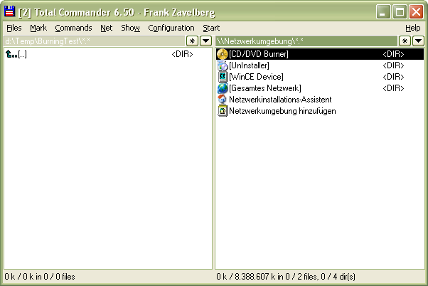
The Network Neighborhood listing with the TCBurner plugin
Querying the properties of the TCBurner directory (by pressing Alt-Enter) will display the About box. Switch to the TCBurner directory, and the plugin will be initialized.
Make sure you keep the two DLL files FoxBurner.dll and mp3lib.dll in the plugin's directory, as those are needed for operation!
The initialization is only necessary once per execution of Total Commander. When you switch out of the TCBurner plugin, and re-switch back to it later, no initialization is done.
Since the various functions of the plugin are executed through "pseudo- directories" and "pseudo-files", you are presented with the following list after switching to the plugin directory.
"Pseudo" means here that the files and directories listed are not really actual files or directories on any data storage device, but merely placeholders to perform the various functions of the plugins, or representations of the actual files being burned to a media.
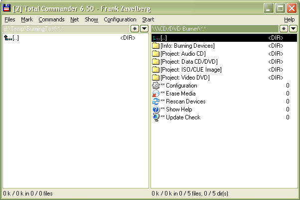
The main listing of pseudo-files/-directories
Depending on what you wish to do, execute the corresponding pseudo-file/switch to the corresponding pseudo-directory.
To add files to a burning project, you use the normal Total Commander Copy command to create representations of the files to be burned in the desired project type pseudo-directory. The writer device you wish to use is selected when project assembly is complete, in the Burn Media dialog.
Further functions are invoked through TC's commands like Query Properties (Alt-Enter) and View (F3).
To accomodate to the requirements of different (multi-user-)environments, TCBurner looks for its configuration data file "tcburner.ini" in multiple folders, which are:
The first folder where it is found (top-down) is used. If it cannot be found, a new file with default settings is created in the first listed folder. This way you can put the configuration file in any of the locations listed, either manually or through the configuration dialog.
For multi-user environments e.g. it is useful to put the file in the "wincmd- ini-path", so that each user has its own configuration file, and since the plugin directory is probably not writable for all users.
You can move the configuration file at any time, even while the plugin is intialized, since each time the file needs to be loaded or saved (and not only once upon initialization!), its location is searched for in the described way.
TCBurner supports multiple languages through "locale"-files. In the subdirectory "Lang" under the plugin directory you find (and put) the language files, extention ".locale".
Several languages are included in the distribution archive, to create your own language file please refer to the example locale file "english.locale" (which is not really necessary in the Lang directory since the english language is included hardcoded in the plugin file itself).
You can switch to switch to another language in the configuration dialog, page "System" (see here). If you're going to create an own language file, it would be nice if you send it to the developer for distribution!
Execute this pseudo-file to display the plugin's global configuration dialog:
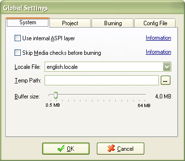
The Global Configuration dialog, page 1
Use internal ASPI layer - If you have problems with burning devices, like incorrect detection of media types, free space, errors during burning or finalization or similar, try installing an external ASPI layer and uncheck this box.
Skip media checks - On some burning devices detection of correct media type, status or size may fail. To be able to burn in such cases, you can choose to skip these checks here.
Locale File - TCBurner supports multiple languages; you can set the language to be used here. For further information, see here.
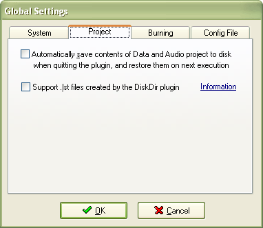
The Global Configuration dialog, page 2
Automatically save contents - Using pseudo-file commands you can save project contents to HDD and load them again later. If additionally you wish to automatically save the current projects' contents each time the plugin shuts down and reload them next time you use it, check this box. The contents are saved to the same directory where the plugin stores its configuration data file (see here), and the project files are named "TCBurnerAutoSaveAudioProject.tcb" and "TCBurnerAutoSaveDataProject.tcb".
Support .lst files - If checked, when adding a file with extension .lst to a Data project (the file itself, not something from within!), you're queried whether you wish to add all files listed instead of the .lst file itself.
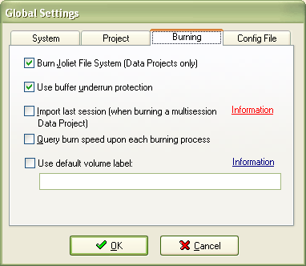
The Global Configuration dialog, page 3
Import last session - When checked, upon burning a non-finalized data project CD the latest session from the CD is imported before preparing the data for the new burning. Attention! This setting does not apply to DVD+/-RW media! Such media cannot contain multisession projects and are always overwritten when new data is burned to them.
Query burn speed - When checked, the available burn speeds for each device and media is queried from the burner in the Burn Options dialog. This option can be turned off since the speed query can - depending on device and media - take quite a while. If turned off burning is always done at maximum speed.
Use default volume label - If checked, after each burning process the volume label of the burned project type will be replaced by the default label you set here.
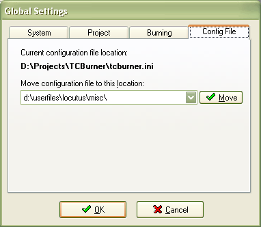
The Global Configuration dialog, page 4
Here you can change the location of the plugin's ini file. Please see here for further information. Changing the location actually means the config file is moved from its current location to the new one.
Note: Some further options which you will quite probably want to set individually for each burning process, like ejecting the media after burning or clearing the project after burning, are not set here but in the Burn Media dialog.
To erase a rewritable media, execute this pseudo-file. You will be presented with a dialog where you can choose the burning device to use.
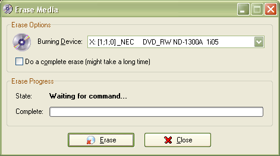
The "Erase Media" dialog
Check the complete erase box to perform a full erase (the whole media is physically overwritten, which can take a long time). If unchecked, only the administrative blocks of the media are erased (fast erase)).
Note concerning the progress bar: Since a CD/DVD burner does not report actual progress information during an erase process, the progress bar shows a timed estimate of the needed duration.
For the first erase process performed on a specific device with a specific type of media, a default duration of 30 seconds for a fast erase and 15 minutes for a full erase is assumed. If that assumption is incorrect (which is quite likely), the progress bar will jump back and forth.
After each completed erase, the needed time is measured and stored in the configuration file, separately for each device/media type combination, so the next erase process should display quite accurate duration values.
Important: rewritable DVD media (DVD-RW and DVD+RW) do not need to be erased before writing new data to them. They're formatted in a special way, thus do not support multisession, and are automatically erased each time new data is written to them.
You can minimize the erase window during the process, its percentage of completion is shown in the title bar and thus in the task bar.
For people with removable burning devices who started the plugin before they plugged their burner in (and are too lazy to restart TC ;) ) this command may be quite useful.
Executing this pseudo-file will open the documentation HTML file you're currently looking at.
Executing this pseudo-file checks the TCBurner web page for the most recent available version. If a newer version than the one you're currently using is available, you'll be queried if you wish to open the web page in your browser.
The main purpose of the pseudo-directories is holding representations of the files and directories you wish to burn to the various project types TCBurner supports.
If you wish to burn an Audio CD, "copy" the files you wish to burn to this pseudo-directory. The following types of files can be burned:
The file types MP3 and OGG will be automatically decompressed on-the-fly while burning (no temporary files are created!).
The audio files are not actually copied anywhere when you "copy" them to the Audio CD pseudo-directory, but the files listed there are mere representations or links of the files you intend to burn. The list of files to burn is presented in the following way:
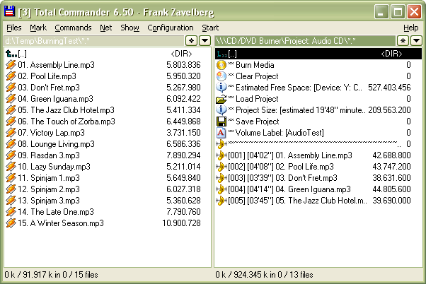
Example for burning an Audio CD
Important: Some pseudo-file commands like "Burn Media" or "Clear Project" only make sense when the project is not empty, and thus are only shown if the project is not empty.
The three-digit number in square brackets in front of the file name denotes the track number of this audio file on the CD. The next number in square brackets is the estimated duration of the track. "Estimated" because the duration is extracted from the file header, and e.g. in case of VBR (variable bitrate) MP3s, this duration may be highly incorrect. The displayed file size refers to the size in bytes that track will use on the Audio CD and is also merely an estimate based on the estimated duration.
If you wish to re-order the tracks, you simply need to Execute (press Return) the track pseudo-file. An input dialog will pop up, where you type the desired new track number.
Notice: The track number you enter is the position to which you wish to move the selected track track before the re-ordering operation . The selected track will be inserted before the destination track (i.e. the one currently occupying the new number), and all further tracks, starting with the new position, will be moved downwards one position. To move a track to the end of the list, give it a new track number that is higher than all existing track numbers in the project. This may sound a little confusing, but just give it a try. :)
The Total Commander operation Delete is available for the audio file representations here, in order to remove tracks from your burning project.
If you wish to burn a Data CD/DVD, "copy" the files and directories you wish to burn to this pseudo-directory.
The files and directories are not actually copied anywhere when you "copy" them to the Data CD pseudo-directory, but the objects listed there are mere representations of or links to the objects you intend to burn. Despite that fact, the directory tree of a Data CD project looks quite like a normal directory. The file sizes are also shown correctly, they're retrieved from the actual files at their real position on your HDD or other storage device.
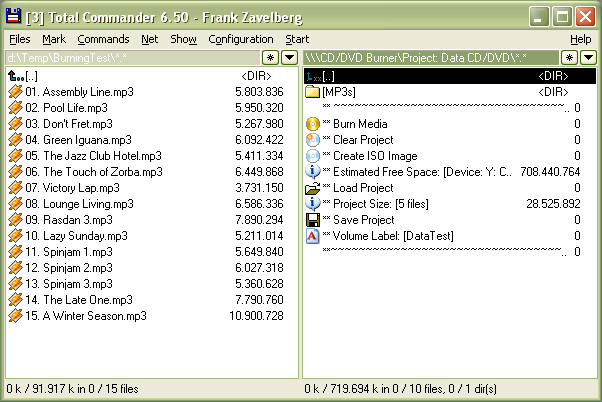In this example you see a directory "MP3s" was created, and the first 5 of the MP3 files on the left pane were "copied" into that directory, as you can see by the total directory size.
Important: Some pseudo-file commands like "Burn Media" or "Clear Project" only make sense when the project is not empty, and thus are only shown if the project is not empty.
The Total Commander operation Delete is available for the file/ directory representations here, in order to remove objects from your burning project. The actual files on your HDD are of course not deleted!
If you wish to burn an image file to CD/DVD, "copy" the file to this pseudo- directory.
Supported are image files of types ISO and BIN/CUE. For ISO, a single file with extension ISO is required. For BIN/CUE, a small cuesheet file (extension CUE) is required and the actual image file (extension BIN).
In case of BIN/CUE you need to copy only one of the two files. The other file must reside in the same directory as the one you copy, its existance of the is verified when you copy.
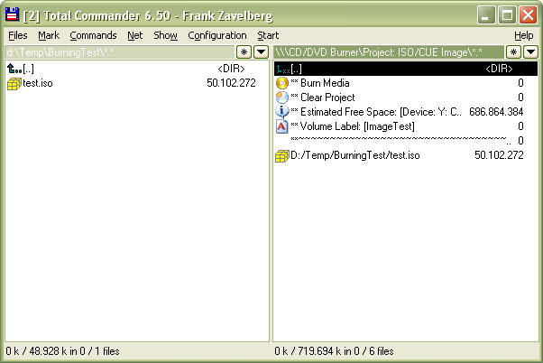As you can see, the pseudo-file shown in the Image project directory actually is a whole path name, reminding you which image file you chose for burning.
Naturally, only one image file is allowed in the Image project. If you "copy" another file to the project, it overwrites the one currently present. To be accepted as an image file, its extension must be ISO, BIN or CUE, and in case of BIN/CUE the respective other file must exist in the same directory.
For BIN/CUE, make sure that the image file matches the media type you're going to burn. Otherwise the burning might fail with an error.
Important: Some pseudo-file commands like "Burn Media" or "Clear Project" only make sense when the project is not empty, and thus are only shown if the project is not empty.
For burning a Video DVD, the plugin assumes that you assembled all the files that make up your DVD (IFOs, VOBs and BUPs) in one directory on your HDD. To tell the plugin which directory that is, you just need to "copy" any one file from that directory to the Video DVD pseudo-directory.
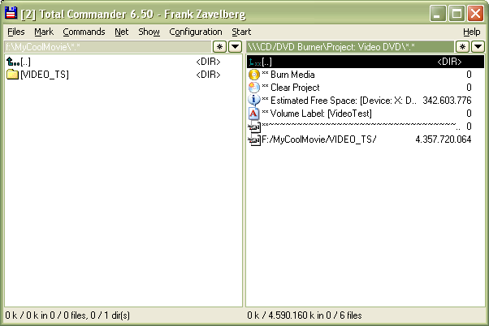
Example for burning a Video DVD
As you can see, the pseudo-file shown in the Video DVD project directory actually is a whole path name, reminding you which path you chose as your DVD project path.
Naturally, only one path is allowed in the DVD project. If you "copy" another file to the project, its path overwrites the one currently present. To be accepted as a Video DVD project path, the path must contain the file "VIDEO_TS.IFO" which is required for all Video DVDs.
Conveniently, this means it is no problem if you simply copy the whole directory containing your DVD files instead of switching into it and copying a single file. That is because "create directory" commands, which such an action would trigger, are simply ignored in Video DVD projects, as well as the actual target file name. The only thing that is evaluated is the path in which the file you try to copy resides. If that path contains a VIDEO_TS.IFO file, it will do nicely.
Important: Some pseudo-file commands like "Burn Media" or "Clear Project" only make sense when the project is not empty, and thus are only shown if the project is not empty.
This pseudo-directory lists all available burning devices with vendor and brand name, plus it shows basic information about the media inserted in the devices (if any).
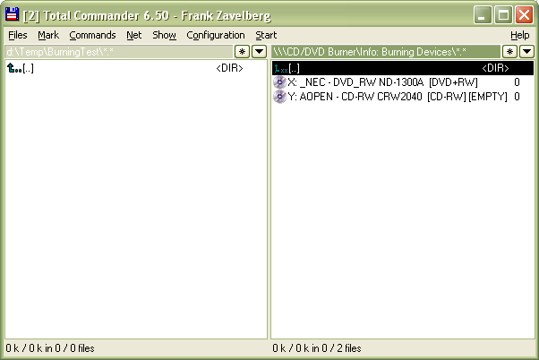
List of available burning devices
Important: for rewritable DVD media (DVD-RW and DVD+RW) no disc status (empty, incomplete, complete) is shown because those media are formatted in a special way, thus do not support multisession, and are automatically erased each time new data is written to them. So there's no real "complete" state for them, and often DVD writers do not report their state as "empty" even though they are.
You may execute the device pseudo-files or query their properties (by pressing Alt-Enter) to open the Device Info dialog. The various information shown speaks for itself, see the following screenshots:
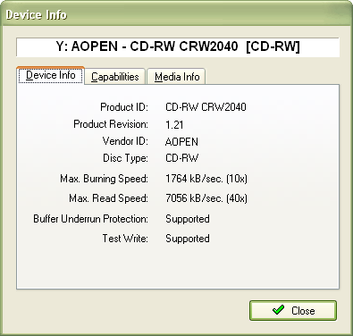
Device info dialog, page 1
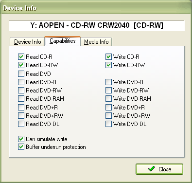
Device info dialog, page 2
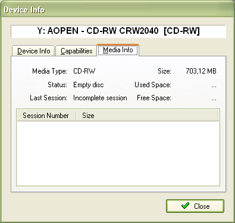
Device info dialog, page 3
All project pseudo-directories show the estimated free space, and in this dialog (which you can reach by executing the free space pseudo-file) you set what the plugin should use as base for the estimate.
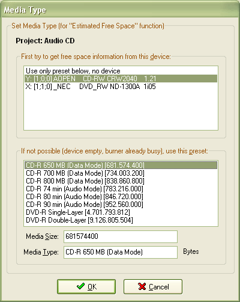
The Media Type dialog
The estimate can be based on a media inserted in the device you choose in the upper list, and if that is not desired, or the device is empty or busy, the media type and size you choose below is used as base.
The settings made here are stored separately for each project type.
The Burn Medium dialog is invoked by executing the corresponding pseudo-file in either one of the burning project pseudo-directories. Notice that the necessary pseudo-file only becomes visible when the project is no longer all empty, i.e. when at least one file/audio track has been "copied" to it, or a valid DVD path has been chosen etc.
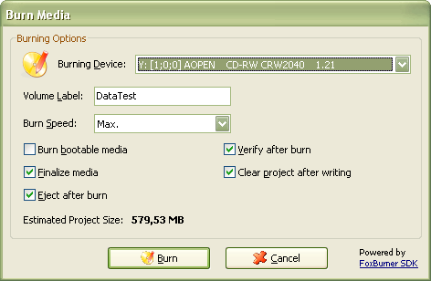
The Burn Medium dialog
In this dialog you can set the burning options that you likely will want to set individually for each burning process. So for your convenience those options are not located in the General Options dialog, but here where you also choose the burning device to use.
Notice that not all options are available/applicable for all types of projects. E.g. the Verify option is only available for Data projects, the option Finalize can only be turned off for Data projects and is always on for Audio CD and Video DVD projects and so on.
If activated in the Global Settings dialog, you can choose the desired burning speed. Each time the Burn Options dialog is invoked, and each time you change the burning device, the available speeds are queried. That is because the available speeds do not only depend on the burning device, but also on the media inserted. If the Query Burn Speeds option is disabled in Global Settings, the Burn Speed combo box only has the option "Max. Speed" available.
After all that work, your burning process is finally on its way. :) Its progress is shown in the following dialog.
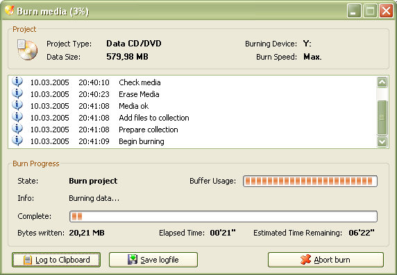
And there goes the burning...
The areas of the dialog should be quite self-explanatory. You can abort burning or verifying by clicking the Abort button.
You can minimize the burn window during the process, its percentage of completion is shown in the title bar and thus in the task bar.
You can contact the developer of TCBurner for questions, suggestions and bug reports here. Please choose: